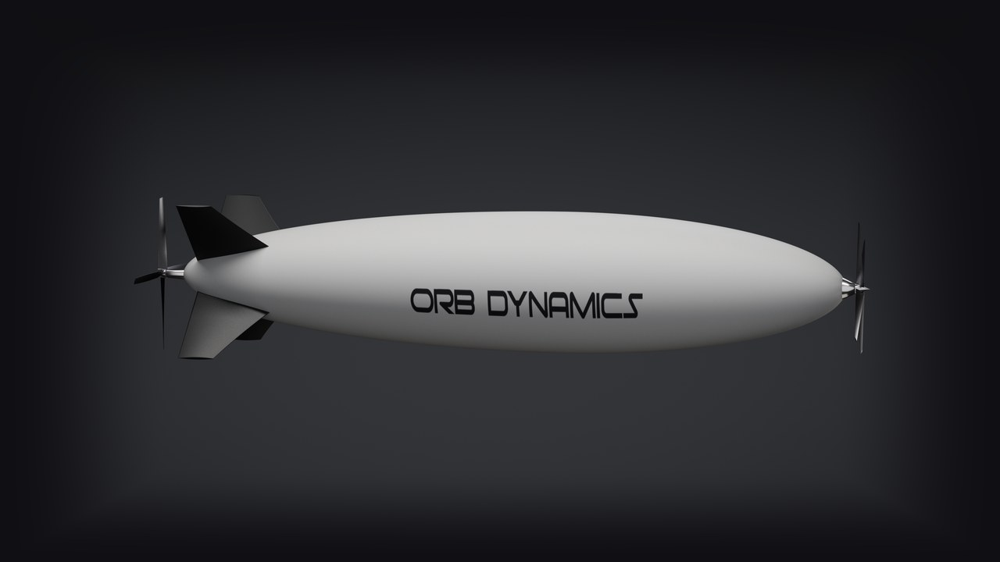
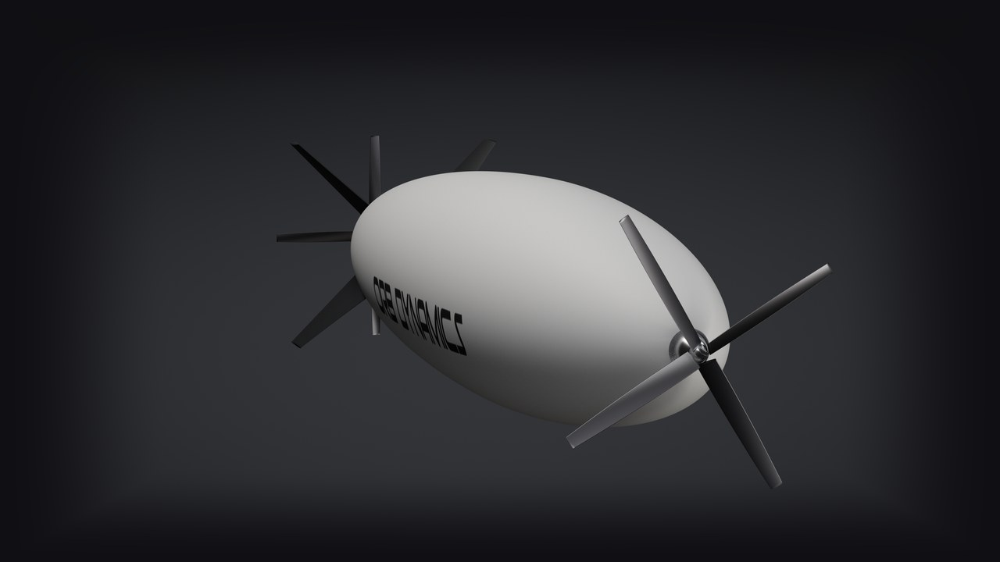

Hydrogen airships for
persistent aerial watch
Autonomous, long-endurance airships that stay on station for a day or more, with detail on the ground.

24 hrs+Endurance
1,000–2,000 kmRange
Zero carbonEmissions
HydrogenSafe by design

One platform, multiple markets
Persistent autonomous watch wherever coverage is thin.
- Wildfire detectionEarly alerts for fire crews
- Infrastructure & governmentPowerlines, pipelines, rail and maritime patrol
- Cargo transportAutonomous middle-mile freight
What one airship can watch
Line of sight from 100 m altitude reaches about 36 km in every direction. Tap the map to move the airship.
≈4,000 km² in view from one airship
Radius is the geometric horizon for a sensor 100 m above flat ground (√(2Rh) ≈ 35.7 km). Terrain, haze and sensor resolution shorten practical detection range.